Part I · The objective · Module 1
What should a transport system optimize?
The introduction ended with a principle: transport should improve the welfare of the people who use it, while minimizing the harm it does to everyone else. This module turns that principle into something you can calculate. We first ask why we would want a number at all. Then we build it piece by piece, looking at the shape of each piece and the history behind it. The full welfare function appears only at the end, once every part of it is familiar.
- Explain three uses of a numerical objective: measuring and comparing, scoring simulations, and searching for better plans automatically. Explain why public simulation matters for democratic decisions.
- Write welfare as the sum of five terms (access and choice, health, externalities, land, public cost) subject to four limits, and say what each term measures.
- Give the numerical form of each term, explain the shape of its curve, and name at least one alternative formulation and its history.
- Explain the difference between pricing an outcome and constraining it, and what a shadow price is.
- Assemble the full welfare function \(W\), and show that "minimize vehicle-hours" is a special case of it.
- Read the planning traditions of the seven role-model countries as different weights on, or constraints in, \(W\).
1. From two roads to one question
The introduction followed two roads built in the same decade with the same aim: fast car access to a growing city. Houston rebuilt the Katy Freeway to as many as 26 lanes. Utrecht dug its Catharijnesingel motorway back out and refilled it with water. Each decision makes sense under some objective. The Katy project was scored on vehicle-hours, volume-to-capacity ratios and level of service. Utrecht's reversal valued space, safety, quiet and the life of the city center.
Debates about such projects often go in circles because the two sides answer different questions. "Did peak travel time fall?" is one objective. "Are people better off, all costs counted, here and elsewhere, now and later?" is another. The second question needs an explicit statement of what better off means. That statement is the objective function.
Vehicle speed is an intermediate variable, not the ultimate purpose of transportation. A city in which residents drive 30 km to work at 80 km/h is not necessarily more accessible than one in which they cycle 5 km at 20 km/h.
2. Why put a number on it?
Planning has long run on judgment, standards and negotiation, and much of it still should. A numerical objective does not replace any of these. It adds four things that are hard to get otherwise.
Use 1: Measure and compare
A number lets you say how a transport system is doing, track it over time and compare it with other cities. More importantly, once the objective is written down, objectives themselves become comparable. You can score the same plan under an American, a Swedish and a Singaporean reading of welfare and see where they disagree and why. Without a written objective, the disagreement stays hidden inside professional habits. The objective explorer does exactly this for four plans on one corridor.
Use 2: Score simulations
A traffic or land-use simulation produces flows, travel times, queues, emissions and trips. It does not say whether the simulated city is better. An objective function turns simulation output into a judgment: it is the fitness function that scores each simulated version of the transport system. Call a version, meaning a specific set of roads, services, rules, prices and land uses, a plan \(\theta\). The pipeline is then:
plan \(\theta\) → simulation of how people and vehicles respond → outcomes (times, trips, crashes, emissions, land) → objective \(W(\theta)\)
With today's computing power, a city can be simulated at the level of every resident. Agent-based models such as MATSim routinely represent millions of synthetic people, each with a daily schedule. Scenario building can then become second nature: something planners do as routinely as software engineers run tests, rather than a one-off consultancy exercise for a major project.
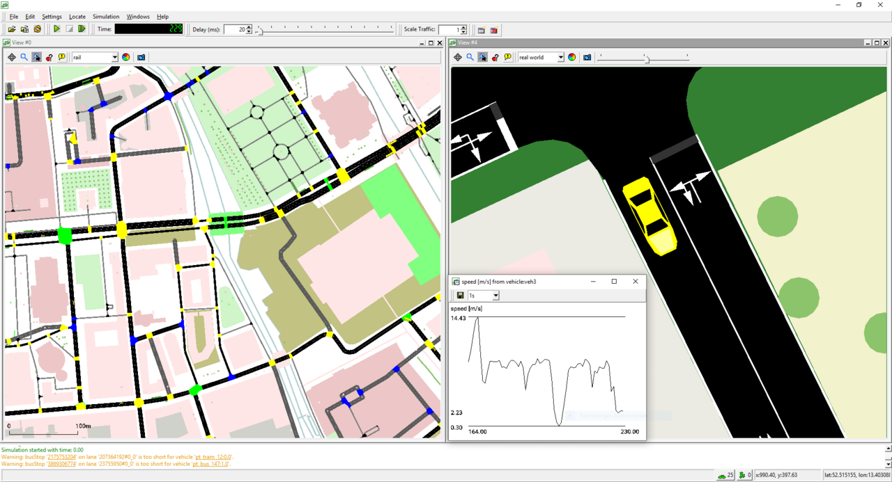
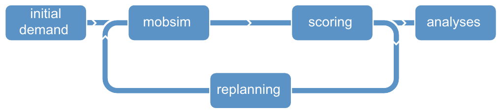
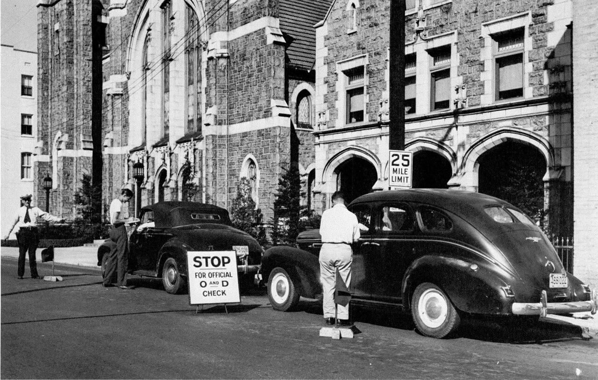
Simulating a whole city is older than it sounds. In 1955 the Chicago Area Transportation Study began interviewing households and stopping drivers at the roadside to record where every trip started and ended. Its director, J. Douglas Carroll, wanted to model the entire region's traffic at once. A colleague at the Bureau of Public Roads later recalled that "Doug Carroll was convinced that the whole city could be done and was looking around for a machine large enough." The study's reports (1959–62) set the pattern for the four-step model that is still used worldwide (Module 4). Its objective, though, was the one this module questions: forecast car traffic, then provide the road capacity to carry it.
Source: Lee Mertz, "Memories of the Interstate", FHWA.
Use 3: Search for better plans
Once a plan can be scored, a computer can search for better ones. This is an old idea in traffic engineering. TRANSYT, developed at the UK's Road Research Laboratory in the late 1960s, optimized signal timings by hill-climbing on a "performance index", a weighted sum of vehicle delay and stops. That was an objective function. It counted vehicles rather than people and ignored everything outside the carriageway, so it optimized the wrong thing very efficiently. The method was sound; the objective was narrow.
In February 1967 Dennis Robertson's program TRANSYT first ran on a Marconi Myriad mainframe at the Road Research Laboratory's traffic unit in Glasgow. Optimizing a network of about 50 links took a few hours. It built on Peter Whiting's model of queues and stops and his hill-climbing search over signal offsets. In November 1967 it was tried on six junctions of Cromwell Road in West London and cut travel time by about 15%. Robertson published the method in 1969 (RRL Report LR 253).
TRANSYT spread to the United States as TRANSYT-7F and led to SCOOT, an adaptive system tested in Glasgow and Coventry around 1980 that adjusts timings to live traffic. TRANSYT is still sold today (version 17, 2024). Its manual still describes the objective as "a weighted sum of all vehicle delays and stops", now in money.
Sources: E. Valenzuela, "TRANSYT: un poco de historia" (Universidad de Chile, 2001, Spanish); TRL version history.
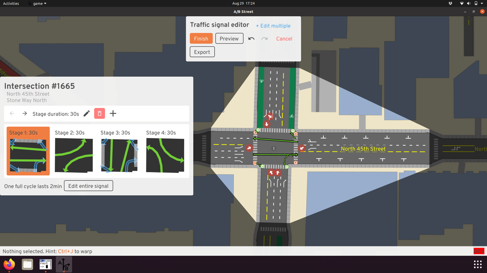
Two families of optimization methods are relevant:
- Non-gradient (black-box) methods, such as genetic algorithms, simulated annealing and Bayesian optimization, need only the ability to evaluate \(W(\theta)\). They suit noisy, complex simulators and discrete choices like "build this link or not".
- Gradient-based methods follow the slope of \(W\). They need a model that is differentiable, or a smooth surrogate model trained on simulation runs. They scale to many continuous variables such as prices, signal timings and frequencies.
Transport optimization has a special structure, often called bilevel. The planner chooses \(\theta\), and travelers then respond by choosing their own routes, modes and destinations. A plan that looks good with travelers held fixed can look poor once they adapt. Braess's paradox (1968) is the classic warning: adding a road to a congested network can make every traveler slower. The network design problem, formalized in the 1970s (for example by LeBlanc, 1975), is this bilevel search. The automatically generated variants are not decisions. They map out the options, and especially the trade-offs between them, for people to choose from.
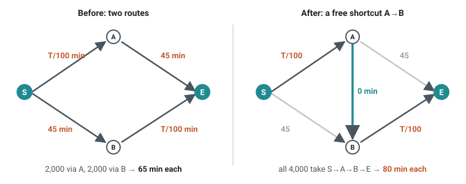
Use 4: Open the decision to the public
Transport decisions are usually argued from conclusions: "this road will relieve congestion", "this bike lane will kill business". When the simulation and the objective are public, the argument can move to the assumptions. Which demand response is plausible? What is a quiet street worth? Open-source simulators (SUMO, MATSim, and citizen-oriented tools such as A/B Street), open map data (OpenStreetMap) and open timetables (GTFS) mean that a neighborhood group, a journalist or a student can test a proposal, not just a consultant. A transparent objective is a precondition. If the weights are hidden in software defaults, they cannot be debated.
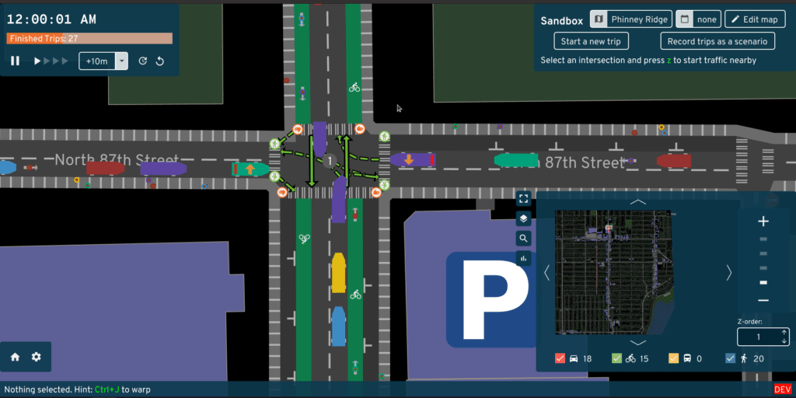
- Goodhart's law: when a measure becomes a target, it ceases to be a good measure. Level of service became a target, and the result was capacity-building that its authors never intended.
- The McNamara fallacy: what is easy to measure crowds out what matters. Time savings are easy to measure, and a child's freedom to walk to school is not.
- Optimizers exploit model errors. An optimizer will find the places where the simulation is wrong and push the plan there. Verification and validation (Module 10) come before optimization.
The objective supports judgment. It does not replace it.
We will come back to simulation-based search and public simulation later in the course, once the basics are in place: in Module 10 (building simulations that can be trusted), Module 14 (using the objective in decisions) and the capstone.
3. Welfare in one line
The objective of this course is the sum of five terms. Measure each in money per year, so that they can be added:
In words: welfare is the value people get from being able to reach what they need, plus the health benefits of their travel, minus the harm that travel imposes on others, minus the land it consumes, minus what it costs the public to build and run.
The sum is maximized within four limits that many societies refuse to trade away:
- deaths and serious injuries on the road stay below a limit, ultimately zero;
- emissions stay within the carbon budget;
- land used for transport stays within what the city can spare;
- every group of people keeps a minimum level of access.
Why money, and where are the weights?
Money is only a common unit. It lets minutes, deaths, tonnes of CO₂ and square meters be added. If the terms were left in their own units, the sum would need explicit weights:
$$W = w_A A + w_B B - w_C C - w_D D - w_E E .$$Converting every term into money sets these weights to 1, but the judgment does not disappear. It moves into the prices used for conversion: the value of an hour, of a statistical life, of a tonne of carbon, of a square meter. Those prices differ between countries, and much of the international comparison in this course is a comparison of prices. Where a society will not put a price on something, it uses a limit instead (section 9). Where it wants to favor some people, such as low-income households or children, it weights their welfare more (\(\omega_g\) in section 4).
The next six sections give each part a numerical form.
4. Term A: access and choice A
What it measures: the value to people of being able to reach jobs, schools, shops, care and each other, given the options they have.
From travel time to accessibility
The simplest measure of access is travel time. Early traffic engineering added up the time that all vehicles spend on the road network. For each road, it took the number of vehicles, \(q\), times their travel time, \(t\), and summed over all roads: \(\sum q\,t\). Planners then tried to make this total as small as possible. Highway appraisal, likewise, counted the minutes a project saves.
Economists then added money. The generalized cost of a trip is its money cost plus its travel time converted into money: \(g = c + \text{VOT}\cdot t\). Here VOT, the value of time, is the number of euros a person would pay to save an hour (Module 2).
Both measures look at the cost of trips that people already make. Neither says what the trips are for.
In 1959 Walter Hansen proposed a different measure, which he called accessibility. It counts the opportunities that a place puts within reach:
$$A_i = \sum_j O_j \, f(c_{ij}).$$Here \(i\) is the place where someone lives, and \(j\) runs over all possible destinations. \(O_j\) is the number of opportunities at destination \(j\), for example jobs. \(c_{ij}\) is the cost of getting from \(i\) to \(j\). The function \(f\) gives less weight to destinations that are harder to reach.
Two shapes of \(f\) are common. A step function counts only what lies within a threshold, for example "jobs within 30 minutes". This is called the cumulative-opportunities measure. A smooth decay, such as \(f(c) = e^{-\delta c}\), counts near destinations a lot and far ones a little. The parameter \(\delta\) sets how fast the weight falls. This is called the gravity measure, because it resembles Newton's law of gravity: big and close things attract most.
In 1970 Torsten Hägerstrand added a further idea, called time geography. A person's day has fixed points, such as working hours and the time the daycare closes. A destination is accessible only if a visit fits into the gaps between them.
The utility-based measure: the logsum
Hansen's measure counts what is reachable. It does not say how much being able to reach it is worth to people. Random utility theory answers that question. It was developed for transport by Daniel McFadden in the 1970s, and it earned him the Nobel Prize in 2000.
What we are trying to do
Picture a person about to make a trip. They can go by car, by bus or by bike. Some things about each option are easy to measure, such as the travel time and the cost. Other things matter too, but nobody else can see them: a liking for buses, today's weather, a heavy bag.
Suppose the person gives each option a score and takes the option with the highest score. Economists call this score utility. Part of it comes from the things we can measure. We call this the measured part. The rest comes from the things we cannot see. We call this the hidden part.
A planner who changes a road or a bus line changes only the measured parts. The planner wants to know two things:
- Who chooses what? What share of people will pick each option?
- What is the choice worth? On average, how good is the option each person ends up with?
The hidden parts differ from person to person. We cannot know them, so we treat them as random numbers. The demo below does exactly that. It simulates people, each with their own random hidden parts, and lets each of them pick their best option.
Take a 6 km commute with three options. The car takes 15 minutes and costs €6 for parking. The bus takes 25 minutes, plus a 10-minute walk, and costs €3. The bike is free but takes 30 minutes, up a steep hill. Each slider sets an option's measured part, which sums up its time, cost and effort. Higher is better. The starting values rank the car first, the bus second and the bike third. For each simulated person, the demo draws a random hidden part for every option. It adds the two parts to get the total utility. The person chooses the option with the highest total.
Eight simulated people. Each cell shows measured part + hidden part = total. The highlighted cell is the highest total in the row: the option this person chooses.
| Person | Car | Bus | Bike | Chooses |
|---|
50,000 simulated people. Each makes the same kind of choice. Counting their choices answers both questions.
| Car | Bus | Bike | |
|---|---|---|---|
| Share choosing it |
| Best measured part | |
| Average total utility of the option each person chooses |
The hidden parts are drawn so that they average zero. Things to try: a bus lane makes the bus faster, so raise the bus by 0.5. A higher parking fee makes the car worse, so lower the car. Snow makes the bike very poor, so move it to the far left. Then make all three options equally good.
Two patterns show up. First, the shares are never all-or-nothing. Even a clearly worse option wins some people, because for them the hidden part tips the balance. Second, the average value of the chosen option is higher than the best measured part. Each person picks what is best for them, and sometimes that is not the option that looks best on paper. Adding a good option raises this average further.
A simulation gives these answers only approximately, and only after drawing many people. The rest of this section finds exact formulas for both: one for the shares (Step 2) and one for the value (Step 4). We build them up in six small steps.
Step 1: the analyst's view
The planner relies on an analyst, who learns from data how people choose. The analyst has a travel survey. For each trip, it shows which option the person chose. It also shows the travel time and the cost of every option, including those not chosen.
The analyst sees only the measured parts and the choices. The hidden parts stay hidden. So the analyst makes the same assumptions as the demo: each person picks the option with the highest utility, and the hidden parts are random.
Formally, write \(U_{nj}\) for the utility that person \(n\) gives option \(j\). We split it into a measured part \(V_{nj}\) and a hidden part \(\varepsilon_{nj}\):
$$U_{nj} \;=\; V_{nj} \;+\; \varepsilon_{nj}.$$The measured part is a weighted sum of the things we can measure:
$$V_{nj} = \beta_t\,t_{nj} + \beta_c\,c_{nj}.$$Here \(t_{nj}\) is the travel time and \(c_{nj}\) the money cost. The weights \(\beta_t\) and \(\beta_c\) say how much one minute and one euro lower the utility. Both are negative, because more time and more cost make an option less attractive. We do not know the weights in advance. Learning them from the survey is the analyst's task.
Other measurable qualities can be added in the same way, for example the number of transfers or how crowded a train is. We collect them in a list, a vector \(\mathbf{x}_{nj}\), and give each its own weight. The weights form a second vector, \(\boldsymbol{\beta}_x\). The term \(\boldsymbol{\beta}_x^{\top}\mathbf{x}_{nj}\) is short for "each quality times its weight, all added up". The full measured part is then
$$V_{nj} = \beta_t\,t_{nj} + \beta_c\,c_{nj} + \boldsymbol{\beta}_x^{\top}\mathbf{x}_{nj}.$$Step 2: from hidden parts to probabilities
Because part of the utility is hidden, the analyst cannot predict a choice with certainty. The analyst can only say how likely each choice is. Option \(j\) is chosen when its utility is the highest, so its probability is
$$P_{nj} = \Pr\big(U_{nj} \ge U_{nk}\ \text{for every other option } k\big).$$To compute this probability, we need an assumption about the hidden parts \(\varepsilon\): which values are likely and which are rare. Such an assumption is called a probability distribution.
The standard choice is the Gumbel distribution. It is named after Emil Gumbel, a German statistician who studied extremes, such as the highest flood of each year. It describes how the largest of many random values is spread. Its shape is a bell, close to the normal distribution, with a slightly longer tail toward high values. In formula form, the chance that a Gumbel value is at most \(x\) is \(\exp(-e^{-x})\). The demo at the start of this section draws its hidden parts from this distribution.
Why Gumbel and not the normal distribution? Mainly because of convenience. With Gumbel, the probabilities have a simple formula. With the normal distribution they do not, and must be computed numerically (that model is called probit).
We need one more assumption: the hidden parts of different options are independent. Knowing that someone has an unusually strong liking for the bus tells us nothing about their hidden liking for the car. Note that this is an assumption about the hidden parts, not about the measured ones. Times and costs of different options can be related in any way.
Under these two assumptions, McFadden showed that the probability of choosing option \(j\) is
$$P_{nj} \;=\; \frac{e^{V_{nj}}}{\sum_k e^{V_{nk}}}.$$Let us read this formula piece by piece:
- The numerator, \(e^{V_{nj}}\), is always positive. It grows quickly with the measured utility: raising \(V\) by 1 multiplies it by about 2.7.
- The denominator adds up the same quantity for all options. Dividing by it makes the probabilities of all options sum to 1.
- If all options have equal \(V\), each gets the same share. If one option's \(V\) is far above the others, its probability approaches 1.
Why does the exponential function appear? It is a consequence of the Gumbel assumption. The full derivation takes about a page (see Train, Discrete Choice Methods with Simulation, chapter 3, free online). Step 4 shows the key property of the Gumbel distribution that makes it work.
This model is called the multinomial logit model. "Multinomial" means that there can be more than two options. "Logit" is short for "logistic unit", a term coined by the statistician Joseph Berkson in 1944. With only two options, the formula becomes the logistic function, the S-shaped curve \(P_1 = 1/(1+e^{-(V_1-V_2)})\). It turns the difference in utility into a probability between 0 and 1.
Step 3: taking the logarithm
The probability formula is hard to read as it stands. The option's own utility sits inside an exponential, and it is divided by a sum over all options. We would like to pull these two parts apart, for two reasons.
- To see what drives a choice. We want to see how an option's own utility affects its probability, separately from the other options.
- To estimate the weights. A survey contains many choices. The probability of observing all of them together is the product of their individual probabilities. That is a product of many numbers between 0 and 1, which is unwieldy and quickly becomes too small for a computer to store accurately.
The logarithm solves both problems. It turns a division into a subtraction: \(\ln(a/b) = \ln a - \ln b\). It turns a product into a sum: \(\ln(ab) = \ln a + \ln b\). And it undoes the exponential: \(\ln e^{V} = V\). Because the logarithm only ever increases, it also keeps the order of things: a larger probability always has a larger logarithm.
So we take the natural logarithm of both sides of the probability formula. The result is
$$\ln P_{nj} \;=\; V_{nj} \;-\; \ln \sum_k e^{V_{nk}}.$$The second term is the same for every option of person \(n\). It does not depend on which option \(j\) we look at. So, for one person, the option with the highest measured utility \(V\) is also the option with the highest probability.
The first term, \(V_{nj}\), is linear in the weights \(\beta\). This is why the model is also called a log-linear model: the logarithm of the probability is linear in the unknown weights.
The analyst can now estimate the weights. The method is called maximum likelihood. It picks the weights that make the choices actually observed in the survey as probable as possible. Thanks to the logarithm, this means maximizing a sum rather than a product: the sum of \(\ln P\) over all observed choices. Because the logarithm keeps the order, the weights that maximize the sum also maximize the product. Here, unlike in the comparison above, the second term does not drop out, because it changes when the weights change. Statistical software does this calculation (Module 4).
The second term has its own name. It is called the logsum, because it is the logarithm of a sum:
$$\text{logsum}_n \;=\; \ln \sum_k e^{V_{nk}}.$$It turns out to be exactly the quantity we need for welfare, as the next step shows.
Step 4: the value of the best choice is the logsum
The person ends up with the utility of the option they choose. Since they choose the best one, they get the highest utility, \(\max_j U_{nj}\). The analyst does not know this value, because it includes the hidden parts.
The analyst can, however, compute its average over all possible hidden values. This average is called the expected value, written \(\mathbb{E}[\cdot]\). With Gumbel-distributed hidden parts, it equals the logsum plus a constant:
$$\mathbb{E}\Big[\max_j\,(V_{nj}+\varepsilon_{nj})\Big] \;=\; \ln\sum_j e^{V_{nj}} \;+\; \gamma .$$The constant \(\gamma \approx 0.577\) is called Euler's constant. It is the average of a single Gumbel value. If the hidden parts are shifted so that they average zero, as in the demo, the constant disappears. Either way it is the same in every situation, so it cancels whenever we compare two situations. From now on we drop it.
Why is this true? The key is a property of the Gumbel distribution: the largest of several independent Gumbel values is again Gumbel-distributed. The box shows this in three lines.
Start with one option. Its utility \(U_j = V_j + \varepsilon_j\) is a Gumbel value shifted by \(V_j\). So the chance that it is at most \(x\) is \(\exp(-e^{-(x-V_j)})\).
The largest utility is at most \(x\) only if every single utility is at most \(x\). Because the hidden parts are independent, we can multiply the individual chances:
$$\Pr\Big(\max_j U_j \le x\Big) = \prod_j \exp\!\big(-e^{-(x-V_j)}\big) = \exp\!\Big(-e^{-x}\sum_j e^{V_j}\Big) = \exp\!\Big(-e^{-(x - \ln\sum_j e^{V_j})}\Big).$$The last expression is again a Gumbel distribution, now shifted by \(\ln\sum_j e^{V_j}\). The average of a Gumbel value shifted by \(m\) is \(m+\gamma\). ∎
Two special cases help to build intuition:
- One option clearly dominates. If \(V_1\) is far above \(V_2\), the logsum is close to \(V_1\). A second, poor option adds almost nothing.
- Several equally good options. If \(k\) options all have the same \(V = v\), the logsum is \(v + \ln k\). The extra \(\ln k\) is the value of choice: with more good options, it becomes more likely that one of them happens to suit you particularly well today.
One more property will be useful later. If an option's measured utility \(V_j\) rises by a small amount, the logsum rises by that amount times the option's probability \(P_j\). An improvement is worth more, the more people use the improved option.
The same car, bus and bike as in the first demo. Now the results of 50,000 simulated people stand next to the formulas from Steps 2 and 4. The hidden parts are Gumbel values shifted to average zero, so no \(\gamma\) appears.
| Car | Bus | Bike | |
|---|---|---|---|
| Logit probability \(e^{V_j}/\sum_k e^{V_k}\) | |||
| Simulated share choosing it |
| Best measured utility, \(\max_j V_j\) | |
| Logsum, \(\ln\sum_j e^{V_j}\) | |
| Simulated average of each person's highest \(U\) |
Things to try: make the three options equal (the logsum is \(\ln 3 \approx 1.10\) above them). Make the bike very poor, as on a snowy day (it adds almost nothing). Give the bus a bus lane by raising it 0.5: the logsum rises by about 0.5 times the bus probability.
Step 5: from utility to money
Utility has no natural unit. To add it to costs and harms, we convert it into money. The cost weight \(\beta_c\) makes this possible: it says how much utility one euro of cost takes away.
We call the amount of utility one euro is worth \(\lambda_n = -\beta_c\). (The minus sign makes \(\lambda_n\) positive, since \(\beta_c\) is negative.) Economists call \(\lambda_n\) the marginal utility of money.
Dividing the logsum by \(\lambda_n\) turns it into euros. The result is the person's consumer surplus: the money value of the choices available to them.
$$A_n = \frac{1}{\lambda_n}\ln \sum_{j} e^{V_{nj}}.$$Only differences between situations are meaningful. When a plan changes the measured utilities, the change in welfare is the change in the logsum, divided by \(\lambda_n\). Williams (1977) and Ben-Akiva and Lerman (1985) established this as the welfare measure of a choice model.
The traditional appraisal shortcut is the rule of a half. It multiplies the improvement by the average of the number of users before and after (Module 2). It is a straight-line approximation of the change in the logsum.
One trip, two options: car with \(V_{\text{car}}=-1\) and bus with \(V_{\text{bus}}=-2\). The cost weight is \(\beta_c=-0.1\) per euro, so \(\lambda=0.1\).
- Probabilities: \(P_{\text{car}} = e^{-1}/(e^{-1}+e^{-2}) = 0.731\) and \(P_{\text{bus}} = 0.269\).
- Logsum: \(\ln(e^{-1}+e^{-2}) = \ln(0.368+0.135) = -0.687\). That is 0.313 above the best \(V\), which is \(-1\). The difference is the value of having a choice.
- A bus lane raises \(V_{\text{bus}}\) to \(-1.5\). The new logsum is \(\ln(0.368+0.223) = -0.526\), an increase of 0.161. The new bus share is 0.378.
- In money: \(0.161 / 0.1 = \) €1.61 per traveler per trip. This is an average over everyone, including those who keep driving.
- Check with the rule of a half: improvement times average bus share \(= 0.5 \times (0.269+0.378)/2 = 0.162\). Nearly identical.
Step 6: why destinations get a term \(\ln O_j\)
So far the options were ways of traveling. The same model works when the options are destinations, such as the districts of a city.
A district is not a single opportunity. A district with 5,000 jobs offers 5,000 possible workplaces. Let \(O_j\) be the number of opportunities in district \(j\).
Suppose, for simplicity, that all opportunities in a district have the same measured utility \(v_j\). They have the same travel time and cost from home. Each has its own hidden part, independent of the others. Then choosing the district means choosing the best of its \(O_j\) opportunities. By Step 4, the value of that choice is a logsum over \(O_j\) equal terms:
$$\ln \sum_{i=1}^{O_j} e^{v_j} \;=\; \ln\!\big(O_j\, e^{v_j}\big) \;=\; v_j + \ln O_j .$$So the term \(\ln O_j\) is not an arbitrary choice. It is exactly what bundling identical opportunities into one district produces. It is called the size term. Three consequences follow:
- The probability of choosing a district is proportional to \(O_j\,e^{v_j}\): the number of opportunities times a factor that falls with travel time and cost. This is the gravity model of travel demand. The logsum over districts is the utility-based version of Hansen's accessibility from the previous subsection.
- Doubling the jobs in a district doubles its chance of being chosen, all else equal. Splitting a district into two halves leaves the predictions unchanged. That is reassuring, because district boundaries are drawn by the analyst, not by the travelers.
- In practice, the weight on \(\ln O_j\) is estimated from data rather than fixed at 1. A weight below 1 means the opportunities in a district are partly alike, so their hidden parts are not independent. A variant called nested logit handles this (Module 4).
A complete option is then a destination \(j\) reached by a way of traveling \(m\), with measured utility \(V_{n,jm} = \beta_t\,t_{n,jm} + \beta_c\,c_{n,jm} + \boldsymbol{\beta}_x^{\top}\mathbf{x}_{n,jm} + \ln O_j\).
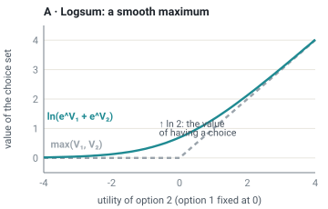
Why this shape
The logsum has five properties that make it a good measure of access and choice.
- It rewards faster and cheaper travel. Shorter times \(t\) and lower costs \(c\) raise \(V\), and a higher \(V\) raises the logsum. This is the traffic engineer's objective.
- It rewards more destinations within reach. More opportunities \(O_j\) raise the logsum, whatever way of traveling reaches them. This is the accessibility objective of Japanese rail-oriented cities.
- It rewards new options, even little-used ones. Adding an option never lowers the logsum. A safe cycle route has value even for people who mostly drive, because it is there when they need it. This is how the choice of mode enters the objective: we value having the option, not reaching a target share of cyclists.
- Improvements count by how many people use them. As shown in Step 4, raising an option's \(V\) raises the logsum in proportion to that option's probability. In money: \(\partial A_n/\partial V_{nj} = P_{nj}/\lambda_n\). The rule of a half rests on this.
- It includes induced demand. Suppose the logsum comes from a model in which people can change routes, ways of traveling and destinations. Then it already contains their response to a plan. Time savings on a fixed list of trips do not.
Whose access? Equity weights
Term A adds up the consumer surplus of all people. Before adding, we may want to give some people more weight than others. To do so, we sort people into groups \(g\), for example by income, age or neighborhood. Each group gets a weight \(\omega_g\). Term A is then the weighted sum:
$$A = \sum_g \omega_g \sum_{n\in g} A_n .$$Standard cost–benefit analysis sets every \(\omega_g = 1\), so a euro of benefit counts the same for everyone. This has a side effect. People with higher incomes are willing to pay more to save time, so their time savings are worth more euros. Unweighted sums therefore tilt toward projects that serve them. Equity weighting (the UK Green Book allows it; see Module 14) and the access floor in section 9 are two answers. Modules 2, 4 and 5 develop this term.
5. Term B: health B
What it measures: the health benefit of physical activity from walking and cycling, which travelers largely ignore when choosing how to travel.
Epidemiology finds that regular walking and cycling lower all-cause mortality, and the dose–response relationship is fairly consistent across studies. The World Health Organization's HEAT tool turns it into a calculation. If a reference amount of cycling \(x_{\text{ref}}\) per week reduces mortality by a relative risk \(RR_{\text{ref}}\), a population of \(N\) people cycling \(x\) minutes per week avoids
$$\Delta\text{deaths} = N\, m_0 \left(1 - RR_{\text{ref}}^{\;x/x_{\text{ref}}}\right)$$deaths per year, where \(m_0\) is the baseline mortality rate. Multiplying by the value of a statistical life gives Term B:
$$B = \text{VSL}\cdot\sum_g N_g\, m_{0,g}\left(1 - RR_{\text{ref}}^{\;\min(x_g,\,x_{\max})/x_{\text{ref}}}\right).$$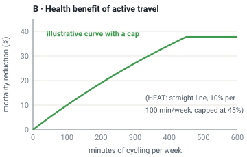
Why this shape, and the debate behind it
The concave curve reflects the epidemiology: going from inactive to moderately active matters most. The cap is a deliberate act of caution. A long-running question was whether cycling's health benefits outweigh its risks from crashes and from breathing polluted air. De Hartog and colleagues (2010) estimated for the Netherlands that the life-years gained from activity were many times larger than those lost to crashes and air pollution. Later assessments in other cities generally agree, but the margin depends on how safe the streets are. That is one reason Term B and the safety limit belong in the same objective. HEAT and its methods are covered in Module 6.
6. Term C: externalities C
What it measures: the harm that travelers impose on other people, which they do not pay for and therefore do not weigh when they decide to travel.
The idea goes back to Arthur Pigou's The Economics of Welfare (1920), which used a congested road as one of its examples. When a cost falls on others, individual choices produce too much of the activity, and a charge equal to the external cost can correct it. Frank Knight replied in 1924 that if the road were privately owned, the owner would charge for it anyway. That exchange shaped a century of debate about road pricing. The numerical form is a sum over kinds of harm \(k\), each a physical quantity \(E_k\) times a unit price \(p_k\):
$$C = \sum_k p_k\,E_k .$$| \(k\) | Harm | Physical quantity \(E_k\) | Unit price \(p_k\) |
|---|---|---|---|
| crash | External crash costs: harm to others, medical and emergency costs | expected killed and seriously injured | value of a statistical life, injury values |
| CO₂ | Climate change | tonnes CO₂-equivalent | carbon value |
| air | NOₓ and PM₂.₅ damage to health | emissions weighted by exposed population | damage cost per tonne, by location |
| noise | Annoyance, sleep disturbance, cardiovascular disease | people exposed above thresholds, in dB bands | € per person per dB band |
| congestion | Delay each driver imposes on other road users | marginal minus average travel time | value of time |
| severance | Barrier effect on pedestrians, children's independent mobility | detours and waiting at crossings | value of time, stated preference |
Why these shapes
The sum is linear in the quantities \(E_k\), but the quantities are anything but linear in traffic.
Congestion is strongly convex. With the classic Bureau of Public Roads (1964) link function \(t(q) = t_0\,[1 + \alpha (q/Q)^\beta]\), usually with \(\alpha = 0.15\) and \(\beta = 4\), each extra vehicle delays all the others by \(q\,t'(q) = t_0\,\alpha\beta\,(q/Q)^\beta\). Alan Walters (1961) and William Vickrey (1969) made this marginal-versus-average distinction the basis of congestion pricing. Near capacity, the delay a driver imposes on others is larger than the delay they suffer. Only this external part belongs in C. The delay people experience themselves is already counted in Term A.
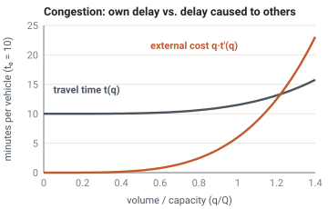
Crash harm rises with roughly the fourth power of speed. Göran Nilsson's power model (2004) relates deaths to mean speed as \((v_1/v_0)^4\) and injuries more gently. A 10% higher mean speed means roughly 46% more deaths. The physics of impact energy, \(\tfrac12 m v^2\), and of the difference in mass between a truck and a pedestrian, sits behind it (Module 11).
Nilsson first fitted the model to Swedish speed-limit changes of 1967–72 and to an energy-saving cut from 110 to 90 km/h in the summer of 1979. His 2004 Lund thesis is free to read.
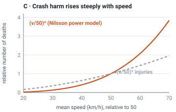
Noise is logarithmic. Sound levels add on a decibel scale, so doubling traffic adds only about 3 dB. Halving traffic on a busy street is barely audible, while lowering speeds or changing the road surface can matter more.
Emissions per kilometer are U-shaped in speed, high in stop-and-go traffic and again at high speed, but total emissions scale with vehicle-kilometers. That is why induced traffic matters so much for Term C.
Alternatives and debates
- Damage cost or avoidance cost? A carbon price can be the estimated damage of a tonne (the social cost of carbon) or the cost of meeting a target (an avoidance or "shadow" price). France's official carbon value follows the second logic.
- Marginal or average? Pricing uses marginal costs. Accounting for a whole sector often uses averages. They can differ by a factor of several.
- Price or limit? Some harms are better treated as limits (section 9).
The EU Handbook on the External Costs of Transport and national appraisal guides supply the values (Module 3). Prices that internalize externalities, such as congestion charges and fuel taxes, are the subject of Module 13.
7. Term D: land D
What it measures: the value of what the land under roads, parking and junctions could otherwise be used for: homes, parks, shops, trees.
$$D = r\,L ,$$where \(L\) is the area used for transport (square meters) and \(r\) is its annual opportunity cost, the rent the land would earn in its best other use. The linear form is deliberately simple. The economics sits in \(r\), which follows David Ricardo's old insight that land rent reflects location: \(r\) is close to zero at the edge of Houston and enormous in central Tokyo.
Why it is usually missing
Most appraisals treat land already in public road use as free: it is sunk, and nobody pays rent for it. Donald Shoup's The High Cost of Free Parking (2005) made the cost visible for parking. An urban parking space can occupy land worth as much as the car parked on it. Leaving out Term D is a hidden subsidy to the space-hungriest modes. A car lane moves fewer people per meter of width than a bus lane, a bike lane or a sidewalk (Module 6).
Alternatives
\(r\) can be estimated from market rents, from land-value models, or as the shadow price of a land limit (Singapore). Land-value capture, in which a railway funds itself from the rise in land values around its stations (Japan, Hong Kong), is Term D seen from the other side (Module 5).
8. Term E: public cost E
What it measures: what it costs the public to build, maintain and operate the system, net of the fares, tolls and charges it collects.
This is the oldest term. The French engineer Jules Dupuit asked in 1844 how to measure the usefulness of public works such as bridges and canals, and in doing so invented consumer surplus. The US Flood Control Act of 1936 required that federal projects be undertaken only if "the benefits to whomsoever they may accrue are in excess of the estimated costs", the founding text of public cost–benefit analysis. The numerical form is
The benefit–cost test was born in a flood. After the Mississippi flood of 1927 displaced hundreds of thousands of people, Congress committed the federal government to flood control. Rival agencies and members of Congress all wanted projects, and the Army Corps of Engineers had already listed 1,600 of them. In March 1936, while a new flood-control bill was in the Senate, rain began falling on the Ohio basin. By 18 March downtown Pittsburgh stood under about 16 feet of water, and 107 people died across the region. On 25 March the Corps brought the Senate committee a rewritten bill. It opened with a declaration of policy: the government should act "if the benefits to whomsoever they may accrue are in excess of the estimated costs". Franklin Roosevelt signed it on 22 June 1936.
The clause was a way to choose among too many projects, and it turned engineers into economists. By 1950 an inter-agency committee had codified the method in the first "Green Book" of benefit–cost practice. Transport appraisal everywhere descends from it, and from Dupuit's bridges a century earlier.
Sources: J. L. Arnold, The Evolution of the 1936 Flood Control Act (US Army Corps of Engineers, 1988); 33 U.S.C. §701a; "Green Book" (1950). Further reading: T. M. Porter, Trust in Numbers (1995), ch. 7.
with \(K\) the annualized capital plus operating and maintenance cost, \(R\) the revenue, and \(\mu\) the marginal cost of public funds. That is the extra welfare lost because each euro of public money is raised through taxes that distort work and spending. France applies such a factor, and many other manuals set \(\mu = 0\) (Module 14).
Turning an investment into a yearly cost
A capital cost \(K_0\) spread over \(n\) years at interest rate \(i\) becomes an annual cost \(K_0 \cdot \tfrac{i(1+i)^n}{(1+i)^n - 1}\), the capital recovery factor. More generally, every term is a stream over time, and future values are discounted. One euro of net benefit in year \(t\) counts as \((1+i)^{-t}\) today.
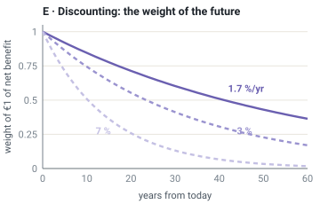
Why revenue is not a benefit
Tolls and fares are paid by users, which lowers their surplus in Term A, and they arrive as revenue in Term E. As a transfer they cancel out. Pricing raises welfare only through the behavior it changes, and through \(\mu\) when the revenue replaces distorting taxes.
9. The limits
Some outcomes are not traded at any price. In the objective they appear as constraints, conditions a plan must meet before its sum is even considered:
| Limit | In words | Formally | Example |
|---|---|---|---|
| Safety | Deaths and serious injuries stay below a limit, in the long run zero | \(F(\theta)\le\bar F\) | Sweden's Vision Zero (1997): it is ethically unacceptable for anyone to be killed or seriously injured in road traffic (Module 11) |
| Carbon | Emissions stay within a budget | \(E_{\mathrm{CO_2}}(\theta)\le \bar E_{\mathrm{CO_2}}\) | Climate laws such as Germany's Klimaschutzgesetz. Until 2024 it set annual limits for the transport sector, then a cross-sector total. |
| Land | Transport uses no more land than the city can spare | \(L(\theta)\le\bar L\) | Singapore caps the number of vehicles (COE quota) because road space cannot grow |
| Access for all | Every group keeps a minimum level of access | \(A_g(\theta)\ge A_{\min}\ \forall g\) | Singapore's "20-minute towns"; Karel Martens' Transport Justice (2017) argues for such a sufficiency threshold |
In 1989 Claes Tingvall, a Swedish safety researcher then working for an insurer, was asked by a consultant how many deaths a new design for child car seats should be aiming for. "Zero," he answered. On 26 January 1995, newly appointed head of traffic safety at the Swedish Road Administration, he was asked the same question by the transport minister, Ines Uusmann: how many deaths should Sweden accept as its long-term target? "Zero!" he said again. "I can still recall the feeling in the room. It was quiet." Two years later the Swedish parliament adopted Vision Zero (read the bill in English).
Source: C. Tingvall, "Vision Zero: How It All Started", in The Vision Zero Handbook (Springer, 2022), open access.
Price or limit? The shadow price
Mathematically, a constrained problem can be written with Lagrange multipliers \(\nu\):
$$\max_\theta\; W(\theta) - \nu_F\,\big(F(\theta)-\bar F\big) - \nu_{\mathrm{CO_2}}\big(E_{\mathrm{CO_2}}(\theta)-\bar E_{\mathrm{CO_2}}\big) - \dots,\qquad \nu \ge 0 .$$When a limit binds, its multiplier \(\nu\) is an implied price, the shadow price: how much \(W\) we would gain if the limit were relaxed by one unit. Vision Zero therefore does not value life "infinitely". It fixes the target and lets the shadow price be whatever is needed to meet it. The difference from pricing crashes with a VSL is political and procedural. With a price, enough time savings can pay for a death, and the burden of proof is on those who object. With a limit, the design must first show that it is safe. A carbon budget works the same way, and France derives its rising official carbon value from it.
10. Putting it together: the welfare function
Substituting the numerical form of each term into the one-line objective of section 3 gives the welfare function used throughout this course. For a plan \(\theta\), per year:
Over an appraisal period of \(T\) years, the yearly values are discounted and added: \(\sum_{t=0}^{T} (1+i)^{-t}\,W_t(\theta)\). Every symbol has now appeared:
| Symbol | Meaning | Section |
|---|---|---|
| \(\theta\) | the plan: infrastructure, services, rules, prices, land use | 2 |
| \(g,\ \omega_g\) | population groups and their equity weights | 4 |
| \(n,\ j,\ C_n,\ V_{nj},\ \lambda_n\) | person, alternative, choice set, utility, marginal utility of money | 4 |
| \(H\) | health benefit (HEAT-type calculation) | 5 |
| \(E_k,\ p_k\) | physical harm of kind \(k\) and its unit price | 6 |
| \(L,\ r\) | land used and its opportunity cost | 7 |
| \(K,\ R,\ \mu\) | cost, revenue, marginal cost of public funds | 8 |
| \(F,\ \bar F,\ \bar E_{\mathrm{CO_2}},\ \bar L,\ A_{\min}\) | the limits | 9 |
The planner looks for the \(\theta\) with the highest \(W\) that satisfies the limits. In practice we rarely search the whole space. We compare a handful of alternatives, generated by hand or by an optimizer, and ask whether the ranking survives reasonable changes in the prices \(p_k\) and \(r\) and the weights \(\omega_g\). The objective explorer lets you try this.
11. The classic objective as a special case
The objective most traffic-engineering software minimizes is total vehicle travel time on the network:
$$\min_\theta \; \sum_{a} q_a(\theta)\,t_a\big(q_a(\theta)\big)$$This is \(W\) with five simplifications:
- Fixed demand. The origin–destination matrix does not respond to \(\theta\), so there is no induced traffic, no mode shift and no new destinations. Term A collapses to time savings on existing trips.
- Vehicles, not people. A bus with 60 passengers counts the same as a car with 1.2 occupants.
- Only motorized traffic on the modeled network. Pedestrian delay at a signal, or a cyclist's detour, is invisible.
- \(p_k=0\) for all externalities, \(r=0\) for land, and Term B is absent.
- No limits. Safety enters only through design standards.
Each simplification was once a reasonable computational shortcut. Taken together, they systematically favor adding road capacity. The empirical "fundamental law of road congestion" (Duranton & Turner, 2011) finds that vehicle-kilometers in US metro areas grow roughly one-for-one with lane-kilometers. Under fixed demand, the time savings the model promises never arrive.
Level-of-service (LOS) standards inherit the same bias. In 2013 California passed SB 743, which replaced automobile LOS with vehicle miles traveled (VMT) as the measure of transport impact in environmental review (in force statewide from July 2020). In the terms of this course, California moved weight from the time part of A to Term C. See Module 8.
12. Eight planning objectives, five terms
Planning documents usually list objectives rather than a function. The eight that recur internationally map onto \(W\) as follows:
| Objective dimension | Representative metrics | Where it lives in \(W\) |
|---|---|---|
| 1. Vehicle mobility | vehicle-hours of delay, speeds, reliability | part of A (time and reliability in \(V\)); external congestion in C |
| 2. Human accessibility | jobs reachable in 30 min, generalized cost | A (the logsum itself) |
| 3. Safety and health | KSI (killed or seriously injured), exposure to pollution | C (crash, air), B (activity), safety limit |
| 4. Environment | CO₂e, NOₓ, PM₂.₅, energy | C, carbon budget |
| 5. Land efficiency | road and parking land per capita, people per meter of street | D, land limit |
| 6. Urban quality | noise, severance, walkability, public space | C (noise, severance), comfort attributes \(\mathbf{x}\) in A, D |
| 7. Equity and inclusion | accessibility by income, age, disability, neighborhood | weights \(\omega_g\), access-for-all limit |
| 8. Economic efficiency and resilience | benefit–cost ratio, lifecycle cost, reliability under disruption | E, plus the whole of \(W\) as net benefit |
Three contrasts explain much of the divergence between Houston, Tokyo, Stockholm and Paris. The first is mobility versus accessibility: time savings versus opportunities reached. The second is individual speed versus system safety: Term A versus the safety limit. The third is traffic capacity versus urban land value: \(r\).
13. Seven role models as seven readings of \(W\)
The countries in this course do not literally optimize \(W\). Their institutions, appraisal manuals and design standards nonetheless reveal which terms they weight heavily, which they price and which they constrain. The table is a qualitative interpretation to frame study, not a measured ranking. Practice varies a lot within each country. Each country page develops it with primary sources.
| Country | Characteristic reading of \(W\) | Signature instruments |
|---|---|---|
| United States | Historically: Term A as vehicle time savings under fixed demand; LOS standards. Today: federal benefit–cost guidance monetizes safety and emissions; California's SB 743 shifts to VMT. | Highway Capacity Manual, USDOT BCA Guidance, Vision Zero cities, congestion pricing in New York (2025) |
| Germany | Formal national cost–benefit analysis for federal infrastructure. Cities pursue Vermeiden – Verlagern – Verbessern (avoid, shift, improve): "more mobility with less traffic". | BVWP 2030 methodology, HBS capacity manual, RASt street design, SUMP / VEP plans, 2024 reform of the Road Traffic Act (StVG) |
| Japan | Term A as accessibility through urban structure: dense development around rail stations, built and financed by private railways. Road appraisal counts only three benefits (time, operating cost, crashes). | MLIT cost–benefit manual, transit-oriented development by private railways, Location Normalization Plans (compact plus network) |
| Singapore | Maximize access subject to a binding land constraint; internalize congestion directly by price and quantity control. | Electronic Road Pricing, COE vehicle quota, Land Transport Master Plan 2040 |
| Netherlands | Safety by design (minimize speed and mass differences); cycling as a primary mode, so Terms A and B dominate. Formal social cost–benefit analysis (MKBA). | Sustainable Safety, CROW design manuals, MKBA guidance, turbo-roundabouts |
| Sweden | Safety as a hard constraint (Vision Zero). Two co-equal transport-policy goals: accessibility, and safety–environment–health. | Vision Zero, 2+1 roads with cable barriers, ASEK appraisal values, Stockholm congestion tax |
| France | Statutory socio-economic appraisal with a high, rising carbon value. Behavior shaped passively through geometry (roundabouts, Ville 30) rather than technology. | Quinet carbon value, CEREMA guides, GIRABASE, versement mobilité payroll levy for transit |
Other countries contribute specific ideas. Spain contributes Pontevedra's car-free center and Barcelona's superblocks. Italy contributes limited-traffic zones and Bologna's Città 30. The UK contributes empirical capacity models and appraisal guidance (TAG). Colombia contributes Bogotá's bus rapid transit. South Korea contributes the removal of Seoul's Cheonggyecheon freeway. See more countries.
Objectives beyond the five terms
The introduction also met objectives that national manuals rarely name. Some fit inside \(W\), and some deliberately do not:
| Objective | Example | Where it goes in \(W\) |
|---|---|---|
| Territorial equality, national integration | Germany's "equivalent living conditions"; France's 1995 promise of a motorway or TGV station within 45 minutes; China's "1-2-3" travel-time circles | Equity weights \(\omega_g\) for remote regions and the equity floor \(A_g\ge A_{\min}\) |
| Economic growth, logistics competitiveness | India's PM Gati Shakti; China's freight-time circles; the Netherlands as a logistics gateway | Freight users in Term A, plus wider economic benefits such as agglomeration (Module 2) |
| Resilience | Japan's 2013 Basic Act for National Resilience; hurricane evacuation in Houston | Expected \(W\) over disruption scenarios: reliability and redundancy have value |
| Affordability | India's National Urban Transport Policy (2006) | Money cost \(c\) in \(V\), weighted by \(\omega_g\) for low-income groups |
| Defense, industrial policy | The 1956 "Interstate and Defense Highways"; electric-vehicle industrial policy in China | Outside \(W\). These are legitimate public goals, but they are not the welfare of travelers and neighbors. Report them separately so that they do not hide inside transport benefits. |
14. Objectives, instruments and timescales
Instruments are not objectives
A further dimension is how a society pursues its objectives. Keep it separate from \(W\). Three families of instruments can produce the same outcome:
| Instrument family | Examples | Strengths and weaknesses |
|---|---|---|
| Passive, self-regulating design | compact roundabouts, narrow lanes, raised crossings, filtered permeability, transit-oriented land use | Robust, cheap to operate, works without enforcement or power. Hard to change once built. Can impose discomfort (e.g., lateral acceleration \(a=v^2/r\) on bus passengers). |
| Rules and prices | speed limits, access restrictions, congestion charges, parking prices, ownership quotas | Flexible and directly targets the externality. Needs enforcement and political consent. |
| Active technological control | adaptive signals, ramp metering, variable speed limits, dynamic tolls | Squeezes capacity out of existing assets. Fragile, costly to maintain, and often optimizes vehicle flow by default. |
France and the Netherlands lean on passive design, Singapore on prices and quotas, and US and German arterial networks on signal control. The choice of instrument changes Terms E (cost) and C (e.g., speed affects crashes and noise). It does not change what is being maximized.
Timescales
| Timescale | What responds to \(\theta\) | Model needed | Module |
|---|---|---|---|
| seconds–minutes | vehicle interactions, queues, signal phases | microscopic simulation | 7, 9, 10 |
| hours–days | route and departure-time choice | (dynamic) traffic assignment | 4 |
| months–years | mode choice, car ownership, destinations | demand and activity-based models | 4, 6 |
| decades | residential and job location, urban form | land-use/transport interaction (LUTI) models | 5 |
A plan can look excellent at one timescale and poor at another. Road widening gives large short-run time savings that induced demand erodes over years. A new rail line carries few passengers at first and may reshape a city over twenty years. \(W\) must be evaluated with a model that covers the timescale on which the plan's effects play out.
15. Using \(W\) honestly
- Report the vector, not just the sum. Show Terms A–E and every limit separately before aggregating. A plan that wins only because of a contested price (VSL, carbon value, \(r\)) should be identified as such.
- Prefer Pareto comparisons first. Plan X dominates plan Y if it is at least as good on every term and better on one. Dominated plans can be discarded without any weights. Only the remaining trade-offs need political judgment.
- Test sensitivity. Vary \(p_k\), \(r\), \(\omega_g\) and the demand elasticities. The explorer does this for the national presets.
- Know what the model cannot see. A calibrated microsimulation of today's traffic can estimate short-run time effects. It cannot predict long-run mode shift, crashes, land development or street quality without additional models.
- Publish it. An objective, a model and its assumptions that others can rerun are worth more than a polished number nobody can check (section 2).
Pick a real road project near you, for example a bypass, a widening or a road diet. From its public documents:
- Identify the objective the project actually used. Which terms of \(W\) appear? Which were set to zero?
- Was demand fixed or variable? Were people or vehicles counted?
- Name one limit that, had it been imposed, would have changed the design.
- Re-rank the project against one alternative using the explorer presets. Does the ranking depend on the country preset?
Two modes, car and bike, with \(V_{\text{car}}=-1.0\) and \(V_{\text{bike}}=-3.0\), and \(\lambda=0.1\) per euro. Compute consumer surplus with only the car, and with both. A safe cycle route then raises \(V_{\text{bike}}\) to \(-1.5\). Compute the gain in surplus and the new bike share. Why is the gain positive even for people who keep driving?
A link has free-flow time \(t_0=10\) min and capacity \(Q=2{,}000\) veh/h, with the BPR function (\(\alpha=0.15,\ \beta=4\)). At \(q=1{,}600\) and at \(q=2{,}200\) veh/h, compute (a) each driver's travel time, (b) the delay one extra vehicle imposes on all others, and (c) the corresponding Pigouvian charge at a value of time of €15/h. Why is (b) the relevant quantity for Term C and (a) for Term A?
You have a city simulation that outputs, for each scenario, every person's trips (mode, time, cost), vehicle-kilometers by road type, and crashes from a safety model. Write down, step by step, how you would compute each of Terms A–E and check each limit from these outputs. Which terms can the simulation not provide, and where would you get them? If you let an optimizer search over speed limits and bus frequencies, what could go wrong?
Readings and resources
- ITF/OECD — What is the Urban Access Framework? Separates proximity, transport performance and accessibility. The best short introduction to Term A as accessibility.
- Todd Litman — Well Measured: Developing Indicators for Sustainable and Livable Transport Planning (VTPI) A long catalog of indicators and of the biases of traffic-based metrics.
- Duranton & Turner (2011) — The Fundamental Law of Road Congestion, American Economic Review Empirical basis for induced demand in US cities.
- de Jong, Daly, Pieters & van der Hoorn (2007) — The logsum as an evaluation measure: review of the literature and new results Why the logsum is the consumer-surplus measure for Term A.
- Hansen (1959) — How Accessibility Shapes Land Use, Journal of the American Institute of Planners The origin of the accessibility measure in Term A.
- Ben-Akiva & Lerman — Discrete Choice Analysis: Theory and Application to Travel Demand (MIT Press, 1985) The logsum as accessibility and welfare measure.
- Pigou — The Economics of Welfare (1920) The origin of the externality argument behind Term C, with a congested road as an example.
- Walters (1961) — The Theory and Measurement of Private and Social Cost of Highway Congestion, Econometrica Marginal versus average congestion cost.
- Shoup — The High Cost of Free Parking (APA Planners Press, 2005) Why Term D is usually invisible, and what it costs.
- Martens — Transport Justice: Designing Fair Transportation Systems (Routledge, 2017) The case for a minimum level of access for all.
- European Commission (2020) — Handbook on the External Costs of Transport Unit values for Term C across EU countries and modes.
- California Governor's Office of Land Use and Climate Innovation — SB 743: from LOS to VMT A case study of a jurisdiction changing its objective function in law.
- Small & Verhoef — The Economics of Urban Transportation (Routledge, 2007) Graduate-level treatment of demand, costs, pricing and investment. The economic backbone of this course.
- MIT OCW 1.201J — Transportation Systems Analysis: Demand and Economics Lecture notes on demand, choice and economics (free).